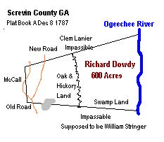

All Dowdy pages are "works in progress".
Please submit your data so that others can benefit from your
research. Please notify
this website of any errors. Thanks.
Updated June 24, 2001
*6/24 Added to Gordon, Hall, Jackson
*6/17 Added to Franklin
*6/15 Added to Carroll and Franklin
*3/19 Created Gordon and Floyd counties. Added to Screven
*2/2 Added to Lumpkin
*12/31 Added to Montgomery
*12/20 Added to Screvin, Ogelthorpe, Washington,
*12/2 Created Jones and Butts Counties. Created "Civil War
Era", Added to Bulloch, Screven, Ogelthorpe
*10/7 Added to multiple counties. Created Montgomery
|
Page Index
Headrights of Georgia
Bounty Grants
|
Name |
County |
Acres |
Date |
|
Robert Dowdy |
Jackson Co. |
64ac
115ac
225ac |
1813
1814
1819 |
|
Richard Dowdy |
Washington Co. |
150ac
300ac |
1790
1795 |
|
Richard Dowdy |
Christ Church |
50ac |
1759 |
|
Richard Dowdy |
St. Mathews |
50ac |
1760 |
|
Richard Dowdy |
Ogelthorpe Co. |
10ac |
1849 |
|
Richard Dowdy |
Screven Co. |
600ac |
1799 |
|
Benjamin F. Dowdy |
Tattnall Co. |
93ac |
1850 |
|
Benjamin Dowdy |
Jackson Co. |
264ac |
1820 |
|
Aaron Dowdy |
Jackson Co. |
100ac |
1821 |
|
William Dowdy |
Jackson Co. |
100ac |
1818 |
Back to Index
Governor
and Council Journals 1753-1760
Ga Colonial Records: Book
"J" of misc. bonds, deeds of gifts, contracts, RTC.pg
121 JOHN MIMMACK of GA, schoolmaster, to RICHARD DOWDY of GA,
pumpmaker Power of Attorney dated Aug 20, 1757 to collect all
debts due him, etc. Witnesses: JOHN WILSON, RICHARD KITCHENER.
Probated by latter before JOSEPH OTTOLENGHE, JP. District of
Savannah. Sworn Sept 10, 1757; re-corded Sept 12, 1757.
Colonial Records of the State of GA
by Candler: pg 677, Dec 1757 Petition of RICHARD DOWDEE setting
forth that he was Settled in the Province & possessed no
lands therein having a Family consisting of a Wife & 2 Children
& desirous of obtaining a Grant of Lands for cultivation
And Praying for 250 A of land at Newport adjoining the South
West line of Lands granted WILLIAM DAVIS which if granted the
Petitioner engaged to cultivate & improve the same.
pg 914 Mar 1759 Read a Petition of RICHARD
DOWDEE setting forth that he had granted him 200 A of land at
Newport which he had not surveyed & the warrant granted for
that purpose was out of date, the Petitioner desireth to resign
his Right to Land & to have the Land his Family entitled
him to ask for granted in one place, having a Wife & 5 Children
& 2 Negroes therefore praying for 400 A on Heron's Island
fronting North Newport River joining South West Lands granted
the Widow CROOK incl'd 2 small Islands of about 10 A each. Rejected.
pg 211 Dec. 1759 RICHARD DOWDY (granted)
50 A in Christ Church Parish.
pg 247 Dec 1759 RICHARD DOWDY 50 A in
St Matthews Parish.
"English Crown Grants, St Phillip
Parish, 1755-1775" RICHARD DOWDEE, Vol 5, pg 99: RICHARD
DOWDEE Towns Lot # 84, Hardwick Granted Feb 7, 1758. Grant Book
A, pg 657.
Back to Index
Georgia Tax Index, 1789-99
NAME COUNTY DISTRICT YEAR PAGE NOTES
DOWDY, MARTIN OGLETHORPE BROOKS 1798 32
DOWDY, NATHANIEL CHATHAM NO DISTRICT 1793
Back to Index
Register of
Colonial Probate Records in the GA Archives
Colonial Administration Loose Papers
Richard Dowdy
Other documents (may include debtor, creditor, etc),
Richard Dowdy
Colonial Inventories (Book F: 58-59)
Richard Dowdy
Estate Record of Stephen Curren at the University of GA
Library.
Richard Dowdy
Back to Index
Military Certificates
of Georgia 1776-1800
Richard Dowdy - Soldier at the Siege of Augusta
Back to Index
Augusta Chronicle
Newspaper Index
|
Name |
Event Date |
Event Type |
Date Printed |
Location |
|
Richard Dowdy |
Oct 27 1787 |
Other |
same |
pg2 col 3 |
|
Richard Dowdie |
July 1791 |
Other |
Sept 10 1791 |
3/1 |
|
Martin Dowdy |
Aug 20 1791 |
Other |
same |
4/1 |
|
Nathaniel Dowdy |
Dec 11 1794 |
Other |
Dec 20 1794 |
3/1 |
|
Martin Doudy |
Oct 1 1798 |
Other |
Nov 24 1798 |
3/3 |
|
Henry Dowdy |
Apr 12 1800 |
Other |
Apr 12 1800 |
2/3 |
|
Richard Dowdy |
Oct 1 1808 |
Adm |
Oct 8 1808 |
3/4 |
|
Richard Dowdy |
Mar 29 1817 |
Other |
same |
3/5 |
|
Richard Dowdy |
June 3 1820 |
Other |
same |
3/2 |
|
Richard Dowdy |
Aug 1 1820 |
Other |
same |
3/2 |
|
Richard Dowdy |
Oct 27 1820 |
Other |
Oct 28 1820 |
2/4 |
|
Richard Dowdy |
Mar 6 1824 |
SHF |
same |
3/5 |
|
Richard Dowdy |
Apr 17 1824 |
SHF |
same |
3/3 |
1805 Land Lottery
Rules for eligibility to participate in the "draws"
1. Bachlor 21 yrs + and 1 year residence
in Georgia (by 1802).....1 draw
2. Married with children and 1 year residence in Georgia....2
draws
3. Widow with minor children and 1 year residence in Georgia.....2
draws
4. Minor orphan ......1 draw
Name...residence...1st draw...2nd draw
Armsted Dowdy of Franklin Co .....won....not eligible
James Dowdy of Franklin Co....no....not eligible
M. Henry Dowdy of Wilkes Co....no....no
Martin Dowdy of Oglethorpe Co....no....no
Richard Dowdy of Scriven Co....no....won
Robert Dowdy of Jackson Co....no....no
Back to Index
1807 Land Lottery
James Dowdy of Franklin (Dixons Dist) drew lot 143/8 in Baldwin
County
Richard Dowdy of Montgomery (5th Dist) drew lot 162/22 in Wilkinson
County
Back to Index
1820
Georgia Census Index
|
Hall County
Aaron Dowdy
Amos Dowdy
Baalam Dowdy
Robert Dowdy
William Dowdy |
Jackson County
Benjamin Dowdy
|
Ogelthorpe County
Henry Dowdy
Martin Dowdy
Richard Dowdy |
Screven County
Wiley Dowdy
Richard Dowdy
|
Back to Index
Georgia Land Lottery, 1827
REPRINT of OFFICIAL REGISTER of LAND LOTTERY OF GEORGIA 1827
9TH DAY'S DRAWING-16th March.
OGLETHORPE. page 28 Fortunate Drawers:
John M. Dowdy, Captains District: Lacy's Number: 39 District:
22 County: Muscogee County
23rd DAY'S DRAWING-April 2nd.
OGLETHORPE. page 71 Fortunate Drawers:
Martin Dowdy, Captains District: Lacys Number: 109 District:
6 County: Carroll County
39th DAY'S DRAWING-April. 20.
HENRY. page 121 Fortunate Drawers:
Aaron Dowdy, Captains District: Allens Number: 160 District:
1 County: Muscogee County
40th DAY'S DRAWING-April 21.
OGLETHORPE. page 125 Fortunate Drawers:
Martin Dowdy, Captains District: LacysNumber: 59 District: 1
County: Muscogee County
48th DAY'S DRAWING-May 1.
OGLETHORPE. page 150 Fortunate Drawers:
Richard Dowdy, sol. Captains District: Simmons Number: 230 District:
28 County: Lee County
51st DAY'S DRAWING-May 4.
HENRY. page 159 Fortunate Drawers:
Aaron Dowdy, Captains District: Allens Number: 7 District: 13
County: Carroll County
56th DAY'S DRAWINGS-May 10
HENRY. page 174 Fortunate Drawers:
Sally Dowdy, wid. T. W. Captains District: Harris's Number: 246
District: 11 County: Carroll County
64th DAY'S DRAWING-May 19.
SCRIVEN. page 200 Fortunate Drawers:
John L. Dowdy, Captains District: do. Number: 63 District: 27
County: Lee County
66th DAY'S DRAWING-May 22.
CHATHAM. page 204 Fortunate Drawers:
Richard Dowdy, R. S., Captains District: McDonnells Number: 87
District: 4 County: Troup County
Back to Index
1830 Georgia Census Index
|
Hall County
Amos Dowdy
Balaam Dowdy
Robert Dowdy
Robert Dowdy
William Dowdy |
Franklin County
Armstead Dowdy |
Ogelthorpe County
Henry Dowdy
John M. Dowdy
Merchant Dowdy
Richard Dowdy
Willis Dowdy Sr.
Willis Dowdy |
Chatham County
R. Dowdy |
|
Henry County
Aaron Dowdy
Benjamin Dowdy
Sally Dowdy |
Carroll County
James Dowdy |
Screvin County
John Dowdy |
Monroe County
William Dowdy |
|
Pike County
Williiam Dowdy |
|
|
|
Back to Index
Claims of Georgia Volunteers Allowed by
Auditor for Horses Lost in the Florida Campaign of 1837-8
James Dowdy- Georgia Brigade (source: "Union Recorder"
Apr 21 1846)
Back to Index
Georgia Cherokee Land Lottery, 1838
Number, District, Name, Residence, County, Comment
134 SEVENTH DISTRICT, FIRST SECTION, CHEROKEE Willis W. M.
Dowdy Guice's Oglethorpe granted previous to the first day of
January, 1838
187 EIGHTEENTH DISTRICT, FIRST SECTION, CHEROKEE William Dowdy
Blackstock's Hall
209 22d DISTRICT, SECOND SECTION, CHEROKEE Mary Dowdy 36th
Scriven widow.
19 23d DISTRICT, SECOND SECTION, CHEROKEE Charles Dowdy 1st
section Cherokee
62 24th DISTRICT, THIRD SECTION, CHEROKEE John M. Dowdy Merck's
Hall granted previous to the first day of January, 1838
259 TENTH DISTRICT, FOURTH SECTION, CHEROKEE William Dowdy
1st section Cherokee
296 11th DISTRICT, FOURTH SECTION, CHEROKEE Charley Dowdy
1st section Cherokee
69 ELEVENTH DISTRICT, THIRD SECTION, CHEROKEE Richard Dowdey
Coxe's Talbot granted previous to the first day of January, 1838
Back to Index
Georgia During the
Civil War
1861-1865 Civil War letters to the Governor ....Benjamin F.
Dowdy... (letters on file at the Georgia Archives -Record Group
1-1-5)
Back to Index
1870
Georgia Census Index
Listings of Dowdys (not always head of household) with
their age and place of birth. This does not
include individuals enumerated in these households.
|
Hall County
Mary J. Dowdy 19 GA
Robt M. Dowdy 40 GA
Wm Dowdy 70 GA |
Lumpkin County
Aaron Dowdy 77 NC
Alfred Dowdy 45 GA
Wills Dowdy 30 GA
John Dowdy 62 NC
John Dowdy 29 GA
Mary Dowdy 33 GA
Richard Dowdy 40 GA
Robert Dowdy 66 NC |
Wilkes County
Ann Dowdy 17 GA
Caleb Dowdy 33 GA
Susan Dowdy 23 GA |
Jackson County
Beay Dowdy 40 GA
F.M. W. Dowdy 47 GA
Joe Dowdy 50 VA
Liza Dowdy 55 GA
Newton Dowdy 10 GA |
|
Cherokee County
Benjamin Dowdy 51 GA
Baalam Dowda 92 NC
Columbus A. Dowda 24 NC
James O. Dowda 42 NC
Julius L. Dowda 31 NC
Mary Jane Dowda 64 NC
Wm A. Dowda 65 VA
Wm R Dowdy 56 GA |
Terrell County
Harrison Dowdy 40 GA |
Tattnall County
Benjamin F. Dowdy 51 GA |
Pulaski County
Bill Dowdy 32 SC |
|
Dooly County
Daniel Dowdy 22 GA |
Madison County
Dock Dowdy 21 GA |
Richmond County
Susan Dowdy 55 NC
Wm H. Dowdy 28 GA |
Cobb County
Augustus Dowda 22 GA |
|
Morgan County
Lavinia Dowdy 18 VA |
Telfair County
Henry D. Dowdy 27 GA
Hesakiah Dowdy 38 GA
Jackson Dowdy 32 GA
John R. Dowdy 42 GA |
Whitfield County
James C. Dowdy 55 GA
Robert Dowdy 23 GA |
Ogelthorpe County
Jane Dowdy 42 GA
Malinda Dowdy 9 GA
Thomas Dowdy 34 GA
Willis Dowdy 40 GA |
|
Fulton County
Josephine Dowdy 22 GA |
Clay County
Sarah Dowdy 28 GA
William Dowdy 28 GA |
Carroll County
Nancy Dowdy 47 TN |
Gordon County
Saluisa Dowdy 33 GA |
Back to Index
Hall County
1819. Sept 30 Recorded. Grantor Eliey Boyce to Grantee
Robert Dowdy 480 ac Oconee River
1819 Jan 23. Jackson Co GA Deed Book G pg 149. Robert
Dowdy of Hall GA to Robt Venable of Jackson 124 ac on waters
of Walnut Fork of Oconee it being part granted unto Charles Sewal
and others. signed Robert Dowdy. Wit: Jacob Braselton Jr, John
Todd,. Recorded Jan 13 1820.
1820 Census
|
Aaron Dowdy |
000100-00000 |
|
Amos Dowdy |
211110-22010 |
|
Robert Dowdy |
110101-32011 |
|
William Dowdy |
200100-10001 |
|
Balaam Dowdy |
320020-20010 |
1820. July 20. Recorded. Grantor Benjamin Whorton to Grantee
Amos Dowdy 172 ac Oconee River
1822. Sept 30. Recorded. Grantor Henry Whitmire to Robert
Dowdy 109 ac Hall County
1824. May 10. Recorded Grantor Robert Dowdy to Grantee
Allen Johnston 240 ac Oconee River. Book A pg 414
1827. Feb 12. Recorded. Grantor Humphrey Waites to Grantee
Amos Dowdy 300 ac Oconee River
1827 Apr 13. The Athenian newspaper (Athens GA) List of
letters in PO at Gainsville (Hall Co)
John Dowday
1827. Apr 27. Recorded. Grantor Amos Dowdy to Grantee
John Rouse. Book B pg 266
1827 Oct 1 The Athenian newspaper (Athens GA) List of
letters in PO at Gainsville (Hall Co)
John Dawdy
1827. Oct 30. Recorded. Grantor William Dowdy to Grantee
Amos Dowdy 100ac Allens Creek Hall county. Book B pg 325
1827. Oct 31. Recorded. Grantor William Dowdy to Grantee
Amos Dowdy 18 ac Allens Creek Hall County. Book B pg 325
1827. Nov 5. Recorded . Grantor Robert Dowdy to Grantee
Robert Young 100 ac Walnut Fork Book B pg 331
1828 Feb 1 The Athenian newspaper (Athens GA) Sheriffs
Sale Gainsville 250 ac land lot 112 8th district Hall Co levied
on as property of Robert Dawdy to satisfy an execution issued
in favor of Hamul and Stephenson vs sd Dawdy
1828 Apr 4 and May 27. The Athenian newspaper (Athens
GA). Sherriffs Sales. At court house in Hall County on 1st turesday
in May next. 100 ac of land whereon Robert Dowdy Jr lives levied
on as property of sd Dowdy by virtue of a fi. fa's. in favor
of P.J. Murray vs sd Dowdy and Isaac Sowell.
1828 July 1 and 1829 March 31. The Athenian newspaper
(Athens GA). Sheriffs Sale at Gainsville Hall Co 198 ac on waters
of Allens Fork of Oconee River in Hall. Adj: Baker and Rouse
levied as property of Wm M'Creee to satisfy a fi fa in favor
of Robert Dowdy Jr vs sd M'Cree.
1828 Oct 1. The Athenian newspaper (Athens GA)List of
letters in PO at Gainsville (Hall Co)
Elizabeth Dawdy
1829 April 7.The Athenian newspaper (Athens GA) List
of letters in PO at Gainsville (Hall Co)
Wm. Dowdy
1829. Apr 18. Recorded Grantor Robert Dowdy Sr. to Grantee
Anna Kilgo 527 ac Oconee River. Book C pg 61. Written Aug 22,
1828. "...Lying on waters of Walnut Fork of Oconee River
grant to Benjamin Wilson containing 527 acres except 57 acres
of the Poplar corner as said survey on equal quantity on each
square it being a part of said grant of 800 acres adjoining Joseph
Reed on the east and Griffin Reed on North, Robert Warren on
West where John Kile lives on the South. Signed Robert Dowdy
Sr. Wit: Wiley J. Garrard. James Johnston, J.P."
1829 June 2. The Athenian newspaper (Athens GA). Sheriffs
Sale at Gainsville Hall Co 100 ac on waters of Walnut Fork of
Oconee River adj: Christian and Rylee wheron Slater Starnes now
lives.levied on as property of Starnes to satisfy fi fas in favor
of Robert Dowdy vs sd Starns
1829 Sept 29 The Athenian newspaper (Athens GA). List
of letters remaining in Gainsville GA (Hall Co) PO
William Dowdy
Allen Dowdy
1829 Oct 20. The Athenian newspaper (Athens GA). Sheriffs
Sale. One black horse, levied on as property of Robert Dowdy
Jr to satisfy judgement in favor of John McElwin Jr vs Jacob
Martin and Robert Dowdy Jr, security on stay.
1830 Census
|
Robert Dowdy |
0110000100000-1120001000001 |
|
Amos Dowdy |
0120100100000-1102001000000 |
|
Robert Dowdy |
2100100000000-1000100000000 |
|
William Dowdy |
0000100000000-2110100000000 |
|
Balaam Dowdy |
0121100100000-0100001000000 |
1830. Apr 27. Recorded. Grantor Robert Dowdy to Grantee
Isasc Lowell 225 ac Oconee River. Book C pg 173
1831. Feb 15. Recorded. Grantor Robert Dowdy to Grantee
Duncan McDuffie 198 ac Oconee River Book C pg 256
1831. Oct 13. Recorded. Grantor Amos Dowdy to Grantee
John Rouse. Book C pg 494
1834. Mar 24. Recorded. Grantor Amos Dowdy to Grantee
William E. David. Book D pg 134
1834. Nov 19. Recorded. Grantor Amos Dowdy to Grantee
William Neely. Book D pg 235
1835. June 11. Recorded Grantor Amos Dowdy to Grantee
Martin Rouse. Book D pg 312
1838. July 10. Recorded. Grantor Robert Dowdy to Grantee
William M. Bell Lot Oconee River. Book D pg 325
1843. Feb 20. Recorded. Grantor Amos Dowdy to Grantee
Isaac Lowell. Book F pg 329
1850 Census
William Dowdy 50 NC, M. (f) 49 NC, G. (f) 20 GA, M.E. (f)
13 GA
1859 Feb 14. Recorded . Grantor William M. Bell to Grantee
William Dowdy 150 ac Oconee River
Marriages (source Hall
County GenWeb)
Douda Aaron married Simmons Clamenty on 01-Jan-1836
Dowdy Elizabeth married Pepnell William H. on 15-Feb-1827 [should
be Pesnell]
Dowdy George C. married Hix Nancy on 18-Dec-1834
Dowdy Maizey married Owens William B. on 22-Jul-1847
Dowdy Rachel married Simpson William E. on 23-Jul-1839
Dowdy William married Myers Margarett on 27-Mar-1823
Back to Index
Ogelthorpe County
1795 Dec 8-Henry Dowdy of Oglethorpe to Clifford Woodroof
of same 200ac in Oglethorpe adj Elijah Pope wit: Saymer Lee,
Martain Dowdy, Nancy Lee. Proved 14 Jan 1797 by Martain Dowdy
"Information on Some GA Pioneers" by John Maddox:
pg 54 DOWDY, M. HENRY, Wilkes Co m a CREIGHTON ? or d/o JOHN
DOWELL DOWDY, RICHARD RS, Oglethorpe Co. d 1830, w MARTHA FOWLER,
d/o ALEXANDER [FOWLER]. Also shows wife PEGGY [SHS - ??] "History
of Montgomery Co. GA, to 1918" by Robert S. Davis, Jr.
pg 154, Militia Rolls for War of 1812 RICHARD DOWDY (1st Class,
Tatnall & Montgomery Co 6th Regiment, 2nd [same bk above]
pg 353 RICHARD DOWDY on Petit Jury - from oldest bk ofInferior
Court Records, July 23, 1816.
1796 Tax List Superior Court Records - Martin Dowdy
Militia
Richard Dowdy Leiut - Apr 12 1824 - March 26 1828 - Aug 10 1831
Willis W.M. Dowdy Capt. - Feb 10 1827 - March 29 1830
1830 Ogelthorpe GA Census (.jpg files of actual pages)
John M. Dowdy 10001-1001001 (see photo
of actual census
page). page 68
Richard Dowdy 010001-002001(see photo of actual census
page) page 75
Henry Dowdy 000000001-00000001 (b.1760-70)
(see photo of actual census
page) page 85
Willis Dowdy 20001-0001 (see photo of
actual census
page) page 86
Marchant Dowdy 200010001-000000001 (b. 1760-70)
(see photo of actual census
page) page 86
Willis Dowdy Sr. 20001-0001 (see photo
of actual census
page) page 86
Will of Martin Dowdy 1845 see
transcript of Will and codicils at Genconnect. Lists wife
Mary, sons: Richard and Willis W.M. and daughters Martha Hood,
Sophia Noell, and Malissa Armstrong. Also mentions "relation"
John M. Dowdy
Marriages (Groom)
Francis Will Dowdy m Mary T. Carithers Dec 6 1845
John M. Dowdy m Lucinda Wise Jan 15 1824
John Dowdy m Margaret Macklen Sept 6 1826
Richard Dowdy m Nancy Jones Feb 12 1815
Richard Dowdy m Ann Johnson May 25 1840
Willis W.M.Dowdy m Eliza W. Jones May 25 1840
Marriages (Bride)
Malissa Dowdy m Benjamin W. C. Martin Jan 15 1826
Martha Dowdy m Joel Hood Nov 15 1815
Matilda Dowdy m Benjamin Peterman Jan 23 1812
Sophia Dowdy m John Noell Nov 15 1817
Mentioned in the "Union Recorder" (Baldwin Co)
1835 October Ogelthorpe Grand Jury- Richard Dowdy
Mentioned in the "Southern Recorder" (Millegeville)
1832 Sept 13 - Ogelthorpe Legal Notice - Richard Dowdy files
his petition for letters of dismission from the estate of B.W.C.
Martin late of said County deceased.
1840 Aug 4 - Public Meeting - Delegates at Ogelthorpe appointed
to attend the Convention in Macon 2nd of August Next: [long list]...Richard
Dowdy
1841 Sept 28 - Sheriff Sale 120 acres of land adj Richard Dowdy
levied on as property of Mary O'Kelly to satisfy execution in
favor of Wm Pitard, Joel Whitehead, Sec.
1845 Oct 7 - Legal Notice- Will be sold before courthouse door
on 1st Tuesday in Nov. next...all property belonging to the estate
of Martin Dowdy late of said County, deceased. Sold for the benefit
of the heirs and creditors of said estate. Signed: Richard Dowdy
and Willis W.M. Dowdy, administrators
"Georgia Journal"
1827 July 31 - Sold at courthouse in Lexington Ogelthorpe Co
1st Tuesday in October next...one negro girl by name of Suckey
about age 16 levied on as the property of Henry Dowdy to satisfy
execution of Edward Cox.
1828 Feb 25 - Sold at courthouse in Lexington April next 80 acres
adj Martin Dowdy on Millstone Creek, property of Henry Dowdy
to satisfy an execution of james Orr and Wm Orr vs. Henry Dowdy.
1830 Feb 27 - Sheriff Sale 100 acres adj Jacob Baily levied on
as property of John M. Dowdy to satisfy exectuion in favor of
John P. Smith.
1837 July 4 - Sherriff Sale tract of land adj James Smith and
Martin Dowdy, levied as property of Wm W. Austen...
1831 April - Ogelthorpe Grand Jury list: Richard Dowdy
1840 April 1 - Letters left at the Talbotton Post Office in Ogelthorpe:
Mrs Sarah Dowdy
Back to Index
Cherokee County
Sheriffs Sale For April ("Southern Recorder")
1833 Mar 20 - Lot 62 Dist 24 Sect 3 Property of John M. Dowdy
to satisfy Thomas S. Tate
1850 Census
W. Dowdy 36 GA
Julian 22 GA
Wm K. 16 GA
Sarah 13 GA
Susan 12 GA
Kissiah 10 GA
Allan J. 8 GA
George W. 5 GA
Joel G. 3 GA
California (f) 1 GA |
Benjamin Dowdy 27 GA
Freeman Beasley 28 GA
Margaret Dowdy 25 SC
Millea Dowdy 18 GA
Anderson S.D. Dowdy 5 GA
William Dowdy 4 GA
Thomas Dowdy 1 GA |
James O. Dowdy 25 NC
Margaret 27 NC
Columbus 4 NC
Augustus A. 2 NC |
William A. Dowdy 46 VA
Mary J. 46 NC
Mary A.J. 16 NC
Julius L. 12 NC
Lauretta G. 6 NC
Margaret C.W. 3 NC |
Balaam Dowdy 73 NC
Kissiah H. 66 NC
Hester H. 18 NC |
|
|
|
Back to Index
Lumpkin County
1834 Census
# of Free Whites in HH
Charles Dowdy 4
William Dowdy 3
Baalam Dowdy 6
Amos Dowdy 7
Robert Dowdy 7
Deeds
The following land sales were recorded in the Lumplin County
courthouse. (Deeds provided by John Dowdie)
Balam Dowdy to Amos Dowdy 80 (Book B 1834-1835)
Dean David to Charles Dowdy 243 "
Samuel King to James Dowdy 91 (Book C 1835-1837)
A Dowdy to Richard Head 47 (Book E 1837-1839)
William Flanagan to James Dowdy 447 "
Charles Dowdy to Wm Anderson 124 (Book G 1840-1842)
B C Johnson to Robert Dougherty 215 "
Brooks Williams to James Dowdy 29 (H 1842-1845)
James Dowdy to Samuel Stainbridge 136 "
William Dowdy to David Meyeres 320 "
William Dowdy to Thomas Kemp 321 "
John & Wm Anderson to James Dowdy 231 (Book I 1845-1846)
W.W.M (?) Dowdy to Mathew Kieth 151 (Book J 1846-1850)
James Dowdy to Wm Anderson 540 "
Amos Dowdy to E K Brown 396 (Book K 1850-1852)
Wm Anderson to Amos Dowdy 37 (Book L 1852-1854)
1850 Census
Aaron Dowdy 54 NC
Rachael 29 GA
Daniel 24 GA
Malinda 6 GA |
Robert Dowdy 47 GA
Alfred 27 GA
Margaret 22 GA
Mitchel 20 Ga
Mary Ann 18 Ga
Rachael 16 GA
Martha 10 GA |
Amos Dowdy 75 NC
Elizabeth 41 GA
John 13 GA
Martha Johnson 15 NC |
John M. Dowdy 42 NC
Annis 35 NC
William 11 GA
Juliann 14 GA
John 11 GA
Eleha (f) 9 GA
Jacob 1 GA
Mary 2 Ga
Susan 1 GA
William Johnson 75 VA |
Chesatee Baptist Association Minutes
Yahoola Church has lost two of her members...Rachel Dowdy
died September 2nd, 1895, aged eighty years.
Dahlonega Signal Newspaper
August 27, 1886
Death of an Aged Lady - Mrs. Dowdy, wife of Rev. Jno. Dowdy,
of this county, died on Monday night. She had been sick for many
years and death was, no doubt, a pleasant relief for her. Mrs.
Dowdy was about seventy-five years old, and was held in high
esteem by her host of friends. She was a devoted and consistent
member of the Siloam Baptist Church.
July 25, 1890
Death of Aaron Dowdy - Old Uncle Aaron Dowdy, as he was always
called, since our early childhood, departed this life last Saturday,
the 19th July 1890. He had been a resident of this county since
it's early settlement, his occupation being that of a farmer.
He was ninety-six years of age, and was a pensioner of the government
for his services in the War of 1812. He and the father of the
writer of this article being members of the regiment who enlisted
in Raleigh, North Carolina, in 1813. There are but few Jackson
soldiers living, and perhaps Uncle Aaron is th elsat survivor
in this county. Peace to his ashes.
January 6, 1893
Rev John M. Dowdy, one of our oldest citizens of the county,
died at his home near this place on the 28th December 1892. He
was buried by the Masonic Fraternity at Siloam on the following
day. He leaves a large circle of friends to lament his death,
although he had lived up to the full measure of his days, being
more than eighty years of age. He was born April 26th 1807.,
and had been a citizen of Lumpkin County for more than fifty-five
years and a minister of the gospel for thirty-eight years.
Marriages 1829-1922+ (source:
Lumpkin
County GenWeb)
Brides
Dowdy, Ada Earle, F. E. June 27, 1915
Dowdy, Brilla Grizzle, Wilburn August 27, 1905
Dowdy, Carrie Smith, Charley C. October 13, 1907
Dowdy, Emma Palmer, Joseph C. Feburary 25, 1883
Dowdy, Emma Wehunt, Jahu R. August 18, 1907
Dowdy, Emma Wilbanks, W. F. November 9, 1903
Dowdy, Julia A. Brady, Basil December 4, 1873
Dowdy, Julia A. Satterfeild, John W. October 6, 1872
Dowdy, June Hipp, John B. March 7, 1866
Dowdy, Lou Lingerfelt, John C. January 27, 1924
Dowdy, Mary Burgess, G. C. October 2, 1912
Dowdy, Mattie Gibson, J. R. December 10, 1926
Dowdy, Monnie Jones, Clarence November 8, 1931
Dowdy, Mrs Mary White, John September 28, 1919
Dowdy, Nancy Head, Joseph December 17, 1882
Dowdy, Nettie Anderson, A. J. September 14, 1907
Dowdy, Ollie Beasley, Charley April 4, 1900
Dowdy, Sallie Barnes, James December 25, 1904
Dowdy, Sallie Smith, Ollie March 20, 1921
Dowdy, Sallie Thompson, J. F. August 26, 1909
Grooms (note: marriages which seem to have incomplete
dates appear to be referring to years after 1900)
Dowdy Amos Johnson,Mrs Elizabeth November 25, 1847
Dowdy, A. L. Corner, Sallie 8-Apr-17
Dowdy, A. M. Hicks, Josephine December 22, 1889
Dowdy, Arch W. Davis, Brilla 3-Feb-07
Dowdy, B. J. Seabolt, Huldy Belle 23-Aug-25
Dowdy, Barney Moose, Ollie 6-Aug-10
Dowdy, Claude Jones, Odelle 12-Sep-26
Dowdy, Cliford Marlow, Clydie 28-Feb-25
Dowdy, F. L. Jones, Estelle 22-Dec-29
Dowdy, G. S. Smith, Nellie 5-Nov-23
Dowdy, Homer Evans, Myrtle 16-Sep-18
Dowdy, Isaac L Finley, Minervia November 12, 1839
Dowdy, J. M. Price, Sarah November 23, 1886
Dowdy, Jacob Findley, Lucy November 8, 1846
Dowdy, James R. Swansey, Frances K. Feburary 10, 1876
Dowdy, John J. Satterfield, Nancy L. March 8, 1896
Dowdy, John M Johnson, Ann August 5, 1835
Dowdy, John Wesley Robertson, Mattie 19-Dec-01
Dowdy, R. M. Anderson, Mary 18-Sep-04
Dowdy, Richard M. Rider, Sarah Ann November 9, 1884
Dowdy, Richard M. Brady, Julia Ann July 31, 1879
Dowdy, William Beasley, Sarah December 19, 1878
Dowdy, William J. Anderson, Carrie 5-Mar-05
Dowdy, William R. Smith, Cora 11-Oct-13
Dowdy, William T. Head, Rebecca Jane October 5, 1879
Marriage Book B 1849-1865 page numbers (seems to be
different than the list above)
Dowdy, Emiline Berry, Henry 31
DOWDY, J. C. Jackson, Sarah T. 286
Dowdy, Mary Ann Campbell, John 118 July 12, 1853
Dowdy, Nancy Johnson, William F. 46
DOWDY, William R. Berry, Mary A. 304
John Dowdie provides the following additional marriage listings
from the Lumpkin Co Library (some are duplicates but some are
not)
Alfred Dowdy to Sarah Kershaw 97
Robert M Dowdy to Lucretia C Payne 187
Joseph Dowdy 216
William Dowdy 297
Richard Dowdy 311
William T 314
Richard 405
Julia A Dowdy to John W Satterfield 195
Mary Ann Dowdy to J Lockaby 115
Lumpkin Cemeteries
MIll Creek Baptist Church
Robert Dowdy 6/12/1803 - 10/14/1876
Cavender's Creek Church
Nancy O.(?) Dowdy 5/30/1829 - 7/21/1896
Clarence Dowdy 2/14/1900 - 2/25/1900
Lizzie Dowdy 3/14/1876 - 10/17/1881
Sarah Dowdy 5/29/1873 - 8/9/1884
James R Dowdy 4/12/1828 09/05/1915
Francis L Dowdy 6/6/1853 - ?
J M Dowdy (Inf) 4 days
Effie B Dowdy age 33y 2m 24d
Mary K Dowdy 11/24/1871 - 5/28/1884
George Dowdy 12/31/1867 - 6/7/1884
Back to Index
Talbot County
1850 Census
Thomas Dowdy 28 Ga
Rutha 31 GA
Martha 1 GA
Eliz Wynn 16 GA |
Amistad Dowdy 65 NC
Elizabeth 55 SC
Mary 22 GA
Calaway 20 GA
Andrew 17 GA |
Marriages
Elizabeth Dowdy and George Hollingsworth 21 Dec 1841
Nancy Dowdy and James Hollingsworth 28 Dec 1841
Rebecca Dowdy and John Teal 3 Apr 1834
Sarah Dowdy and James H. Warrick 2 Jan 1845
Poor School List of 1860
John T. Dowdy "Thomas Dowdy's children"
Martha Dowdy
Mary J. Dowdy
1864 Exempt from GA Militia
Thomas Dowdy Age 46 , 3 mos, Farmer ,"He was a registered
overseer born in GA"
Back to Index
Jackson County
Tax Records
|
1804 |
Robert Dowdy |
|
1809 |
Robert Dowdy
William Dowdy (John Rogers, agent) |
|
1810 |
Daniel Dowdy
Robert Dowdy
William Dowdy
Balaam Dowdy |
|
1817 |
Robert Dowdy
William Dowdy
Amos Dowdy |
1806 Sept 12. Deed Book E, pg 161. H. Montgomery to Robert Dowdy
both of Jackson. 79 ac. Wit: Howel Rose, Thos Niblack. Recorded
May 9 1809.
1809 Jan 14. Georgia Express newspaper (Athens GA). A list
of defaulters in Jackson County for year 1808
Daniel Dowdey - Capt Robt Martins District
1809 Dec 30. Foreign Correspondent and Georgia Express newspaper
(Athens GA). A list of defaulters in Jackson County for year
1809
Daniel Dowdy - Capt McKenney's District
1810 Apr 14. Foreign Correspondent and Georgia Express newspaper
(Athens GA). List of letters in PO in Jefferson (Jackson Co)
as of 31 March 1810
Robert Dowdy
1810 Sept 24. Deed Book F pg 445. Howel Rose to Benjamin Dowdy
50 ac lying on waters of Mountain Cr adj: land by McReas and
Winn. Wit: Geo W. Beard, Enoch Rogers . Rec Aug 4 1818
1814 Dec 8. Deed Book F pg 401. John Bennett to John Inzer
land on Oconee River. Wit: Robt Dowdy, Sarah Glenn, John Glenn.
Recorded Mar 17 1818.
1815 Nov 15. Deed Book F pg 264. Heirs of Thos Wadsworth:
Robt McEver, John Wadsworth, Wm Wadsworth, and Sarah Wadsworth
to Robert Dowdy 300 ac on Walnut Fork of Oconee part of Survey
granted Jas King . Wit: Nimrod Hamrie, John Rutherford. Recorded
Sept 17 1816.
1818 June 27 Deed Book F pg 445. Benjamin Dowdy to Stephen
Bennett 50 ac (same land as 1810 above) wit: Jacob Braselton
Jr, Richard Major, Recorded Aug 4 1818.
1818 Dec 27 Deed Book G pg 154. Robert Dowdy to John Wallace
both of Jackson 38 ac on Mountain Creek in land of Archebald
Todd. signed Robert Dowdy. Wit: Thomas Langley, Joseph Davis.
Recorded Jan 14 1820.
1819 Jan 23. Deed Book G pg 149. Robert Dowdy of Hall GA to
Robt Venable of Jackson 124 ac on waters of Walnut Fork of Oconee
it being part granted unto Charles Sewal and others. signed Robert
Dowdy. Wit: Jacob Braselton Jr, John Todd,. Recorded Jan 13 1820.
1820 Census
Benjamin Dowdy 2-0-0-0-1-0, 0-0-1-0-0
Marriages
William Dowdy m. Sarah Hardin 6/22/1810
Aron Dowdy m. Sarah Thomson (License) 2/1/1821
Mentioned in the "Southern Recorder" (Milledgeville)
1821 July 1- Letter at the Jefferson PO- Amos Dowdy
Back to Index
Henry County
1826- Land adjacent to Ray H. Dowdy
1847- Wm Smith, Martha Smith, James M. Baxter, Mikel Dowdy,
Hannah Dowdy, Wm C. Baxter and Mary Baxter all of Benton AL,
to Jos. Walker of Henry County GA 202 ac Lot 59 Dist 12.
1849- Superior Court. Thos A Crumbie vs. Michael Dowdy property
seized and sold to Jos. Walker.
Back to Index
Fayette County
1827 Tax
Capt Rockford's District- Colman Teall agent for Aron Dowdy
1829 Tax
Capt Cook's District- William Dowdy
Back to Index
Franklin
County
(note: Tax records are compiled from two different published
sources)
1805 Tax - Capt Dixons District. (Stephen Poe also
in district)
James Dowdy,
Armsted Dowdy -
1806 Tax - Capt. Dixons District.
James Dowdy - poll,
Armstead Dowdy - 202 1/2 ac. adj sd Dowdy, Eli Brook, Sandy Cr,
Wilkinson Co line.
1808 Tax - James Dowdy 155 ac
1810 Tax -
James Dowdy 155 ac
Armsted Dowdy 202 1/2 ac
1811 Feb 1. DB T pg 134-5. 155ac from Andrew Carothers by
his atty Zachariah Thomas, both of Hickman Co TN to James Dowdy
and Armstead Dowdy of Franklin Co. in two adjacent tracts on
Nails Creek adj: Thos Story, Seth Strange and Stephen Poe. Wit:
Fred'k Beall, Ja's H. Little J.P.
1813 Tax -
James Dowdy
Armsted Dowdy
Belum Dowdy - Defaulted
1816 Nov 27. DB HHH pg 128-9. Silas Dobbs to John P. Brown
300 ac waters of Nails Creek adj: Gillespie. Wit: James Dowdy,
Oliver Brown.
1818 Tax - Capt Turks District
James Dowdy - 142 1/2 ac adj Gray, Wily, Nails Cr. -
1818 Tax - (another source)
James Dowdy
Armsted Dowdy
Benjamin Dowdy - Defaulter
1819 Tax - Capt Turks District
James Dowda - 142 1/2 ac. adj Gray, Wiley, N.C.,
Armstead Dowdy 202 1/2 ac adj Self, #22, ..., Wilkinson Co,
Benjamin Doudy - poll, defaulter
1820 Tax - Capt Fleming District
James Dowdy - 75 ac adj Gray, Wiley Nails Cr.
Armsta Dowdy - 67 1/2 ac adj Gray, Wiley, Nails Cr
Benjamin Dowdy - poll, defaulter
1821 Tax - Capt Fleming District
James Dowdy 75 ac adj T. Gas?, Story, Nails Cr
Armsted Dowdy - 70 ac, adj Grays, Wiley, Nails Cr, 202 1/2 ac
adj Self, #43, Dist 2, Wilkinson Co line
1822 Mar 8. DB B pg 148. 76 ac from James Dowdy of Franklin to
William Wiley on S. Fork of Nails Creek . Adj: Anthony Story,
Wm gilmore, opposite head of Dowdy's Spring Branch and near Armsted
Dowdys still house. Sighned "James Dowdy , Sarah Dowdy (x)"
wit: Saml Mosely, Armsted Dowdy.
1822 Mar 16. DB B pg 173-4 William Wiley to Seth Strange 76
acres on Nails Creek (same land as March 8 1822 abstract)...near
Armstead Dowdys still house.
1822 Tax - Capt Bakers District
Armstead Dowdy - 70 ac adj Grays, Wiley, Nails Cr, 202 1/2 ac
adj Self, #43, Dist 2, Wilkinson Co line
1823 Tax - Capt Bakers District
Armstead Dowdy - 50? ac adj Grays, Strange, Nails Cr, 202 1/2
ac adj Self, #43, Dist 2, Wilkinson Co line
1825 Tax - Armstead Dowdy - Capt Strange District
1826 Tax - Armstead Dowdy - Capt Strange District
1827 Tax - Armstead Dowdy - Capt Gilmore District
Registrants in 1827 Land Lottery (see 1827 official list
of "lottery drawers" above)
Capt. Strange District
William R. Dowdy - 1
1828 Tax - Armstead Dowdy - Capt Connelys District
1829 Tax - Armstead Dowdy - Capt Brawner District
1830 Tax - Armstead Dowdee - Capt Brawner District
1830 Census
Armistead Dowdy pg252 - 20110001... - 122001...
1831 Tax - Armstead Dowdy - Capt Brawner District
1832 Tax - ...stead Dowdy - Capt Mangrum District
1833 Tax - Armstead Dowdy - Capt Mangrum District
Superior Court Records 1787-1863
[date?] Balaam Dowdy vs. Robert Miller
Back to Index
Dodge County/
Telfair County GA
"Southern Recorder"
1853 July 4 - Lumber Convention at Lumber City Telfair Co GA.
[long list of timber cutters who attended]..J.R. Dowdy, H. Dowdy
1856 Sept 2 - Sheriffs Sale Lot 236/14 dist levied as property
of James B. Dowdy to satisfy execution of James D. Willcox.
Marriages 1871 to 1930
(note: Dodge County data is important for Telfair Dowdy researchers
because Milan Georgia is located on the boundary)
|
Husband/Wife |
Spouse |
Date of Marriage |
|
Dowdy, Alice |
Thompson, John W. |
Jul 7 1889 |
|
Dowdy, Amanda |
Williamson, J.H. |
Nov 25, 1896 |
|
Dowdy, Annie Lou |
Nixon, William |
June 10, 1923 |
|
Dowdy, Ben |
Brown, Ola |
Oct 1, 1925 |
|
Dowdy, Bessie |
Hilliard, Manley |
Apr 29, 1929 |
|
Dowdy, B.H. |
Dowdy, Martha Jane |
Dec 25, 1904 |
|
Dowdy, David |
Mixon, Rosa |
Jul 8, 1906 |
|
Dowdy, G.W. |
Coffee, Annie Lou |
Sep 8, 1929 |
|
Dowdy, H.A. |
Spires, Sally |
Jun 24, 1912 |
|
Dowdy, Jewel |
Hilliard, Lena |
Sep 11, 1921 |
|
Dowdy, Jim |
Nixon, Lizzie |
Dec 28, 1902 |
|
Dowdy, John |
White, Rosa Lee |
Jul 28, 1918 |
|
Dowdy, J.J. |
Shepherd, Edna Eugenia |
Sep 23, 1923 |
|
Dowdy, Laura L. |
Forrest, C.E. |
Apr 17, 1887 |
|
Dowdy, Loucretta |
Kirkus, Oscar |
Jan 4, 1891 |
|
Dowdy, Madie |
Dampier, Charlie |
Aug 8, 1916 |
|
Dowdy, Martha Ann |
Cooper, Henry |
Dec 28, 1882 |
|
Dowdy, Martha Jane |
Dowdy, B.H. |
Dec 25, 1904 |
|
Dowdy, Martha Lou |
Bowen Peter W. |
Sep 5, 1904 |
|
Dowdy, Marvin |
Pope, Babel |
Dec 29, 1918 |
|
Dowdy, Richard |
Wilcox, Edith |
Dec 13, 1916 |
|
Dowdy, Ruby |
Anderson, ARchie |
Feb 24, 1926 |
|
Dowdy, Thomas |
Nixon, Irene |
Jan 25, 1903 |
|
Dowdy, Tom Pete |
Reaves, Daisy |
Sep 4, 1927 |
|
Dowdy, T.H. |
Rogers, Ruby |
Feb 22, 1918 |
|
Dowdy, T. W. |
Kirtman, Annie Lee |
Oct 20, 1900 |
|
Dowdy, Uriah |
Yancey, Linder R. |
Oct 17, 1886 |
|
Dowdy, William |
Reaves, Mary |
Jan 11, 1877 |
|
Dowdy, W.D. |
Reaves, Ida |
Jun 25, 1895 |
|
Dowdy, W.F. |
Donaldson, Annie |
Nov 8, 1923 |
|
|
|
|
Times-Journal Newspaper (Dodge County GA)
The family of Reverend William H. Dowdy
-------------
Thursday April 7 1932 edition
Rev W.H Dowdy of Milan for many years prominent in the Baptist
ministry in this section of Georgia died in Coleman Sanitorium
Monday morning following an extended illness of carcinoma of
the bladder and Bright's disease. He was brought to the hospital
for treatment Friday.
Mr. Dowdy was 64 years old and is survived by his wife, Mrs Carrie
Studstill Dowdy, and the following children: Mrs C.B. Dampier,
Macon; Mrs L.C. Barron, Mrs Calvin Yawn, Rhine; Miss Sadie Dowdy,
Milledgeville; George Mack, W.H. Jr, Paul and Barton Dowdy, Milan.
Funeral services were conducted in Rockwell Baptist Church tuesday
afternoon by Rev W.H.Coleman and Rev J. N. Crosby. Songs were
rendered by J.E.Stevens, Tom Selph, Dave Cadwell and L.L. Evans.
The following Baptist ministers served as pallbearers: Rev. J.S.
Hartsfield, Rev. O.A. Grant, Rev. W.H. Coleman, Rev A.M. Burnham,
Rev. J.B. Evans and Rev. L.B. Strickland. The following served
as flower girls: Nell Mizell, Christine Barron, Bobbye Ponder,
Gladys Kate Dinkins, Annie Ida Stuckey. Interment was in Rockwell
Cemetery.
[note, there were numerous articles involving Rev. W.H. Dowdy.
One article in 1928 said he "was the former pastor at Hopewell
Baptist Church". Another article in 1909 listed Rev. W.
H. Dowdy as the nephew of Lucretia Yawn Dowdy, wife of Hezikiah
Dowdy. Another mentioned that he helped found Pleasant Grove
Baptist Church.]
---------------------
Thursday May 29 1919 edition
John Dowdy Killed By Negro at Milan
News reached Eastman Saturday of the shooting and killing of
Mr. John Dowdy at Milan by B.W. Washington, a negro who lived
in the Rawlins turpentine quarters, on Friday night. The killing
is said to have taken place either at or near the negro's home,
reports conflicting as to this feature of the affair.
Mr. Dowdy [sic] it is said surrendered to the sheriff of Telfair
County by whom he was placed in jail at McRae. Sunday night Washington
was taken from the jail by a body of enraged citizens and lynched.
Washington was about 65 years old and formerly worked with Mr.
Will Wynne of this city eight years in the turpentine business.
Mr. Dowdy was about 26 years old and a son of Rev. W.H. Dowdy,
a prominent minister of Milan. He leaves a wife and two children,
his wife being a daughter of Mr. Walker Bryan of Rhine.
-------------------------------
Thursday August 24, 1950 edition
Miss Opaline Westberry, daughter of Mr. and Mrs. Lum Westberry,
and Mr. Tom Dowdy, son of Mr. and Mrs W.H. Dowdy were married
Friday afternoon in the Methodist parsonage in Abbeville, Rev.
Eason officiating [note: Abbeville is in next door Wilcox County]
--------------------
Wednesday January 18, 1956 edition
Services Held for Mrs. Dowdy at Rockwell Church
Final rites for Mrs. Carrie Dowdy 84, of Rhine, were held Sunday
afternoon at three o'clock in the Rockwell Baptist Church with
Rev. T.K. Carroll and Rev. Williams officiating.
Mrs Dowdy, born in Telfair County on July 4, 1872, died at the
home of her daughter, Mrs Jim Barron saturday. She was a memver
of the Rockwell Baptist Church and was the widow of the late
Rev. W.H. Dowdy
Serving as pallbearers were James T. Barron, Red Holmes, Jack
Walker, Henry Dowdy, Buddy Studstill and Aflfred Roberson. Sacred
selections were rendered by Mrs. Buddy Studstill, Carey Hilliard,
and Jess Hilliard. Mrs. C.C. Dinkins was the accompanist.
Survivors include three daughters, Mrs. Calvin Yawn, of McRae;
Mrs. Sutie Dykes, of Milledgeville; and Mrs. Jim Barron, of Rhine;
five sons, Paul Dowdy and Bartow Dowdy of Milledgeville; W.H.
Dowdy, of Columbus; Mack Dowdy, Winter Haven Florida; and George
Dowdy of Abbeville; a brother George Studstill of Kentcky; several
grandchildren and great-grandchildren.
Interment was in the churchyard cemetery with Stokes-Southerland
Funeral Home in charge or arrangements.
Another Genealogy taken from obituaries and other reports
in Dodge County newspapers
1. Jack Dowdy m. Beckie Jane Marchant
.....2. John Dowdy of Mississippi
.....2. Jim Dowdy
.....2. Mrs Flora Pace of Richmond Va
.....2. Zeke Dowdy d 1938 age 58 m. Minnie Yawn
..........3. Otis
..........3. Z.W.
..........3. Walter
..........3. Mrs Clinton Taylor
..........3. Mrs Willie Hart
..........3. Mrs Jonnie Dorris
(note the obit of Zeke mentions nephews Eschol Dowdy which would
mean that the following T.I. Dowdy is another brother (but not
mentioned in obit of Zeke in 1938.....)
.....2. T.I. Dowdy (sherrif of Telfair around 1900) m. Mandy
Jane Yawn who d age 73 in 1946
..........3. William H (age 43 in 1937)
..........3. Ottis M (age 38 in 1937)
..........3. Thomas J (I?) (age 24 in 1937)
..........3. Mrs J.W. Saturday
..........3. Mrs H. G Amos
..........3. Mrs W. R. Yawn
..........3. Eschol Dowdy (age 31 in 1937) (living in Savannah
Ga in 1946)
Another Family Grouping
1. unknown
.....2. Richard Dowdy
.....2. Tobe Dowdy (aka Uriah Dowdy) married Lula Yancey (she
died 1942 age 78)
..........3. David D. Dowdy d 1940 age 53 married Rosa Mixon
...............4. Matthew
...............4. George
...............4. Uriah
..........3. Jewel died 1959 age 56
..............4. Mrs Tom Jones Jr
..............4. T.F. Dowdy
..........3. Hez Dowdy (aka T.H. Dowdy)
..........3. Marvin Dowdy (aka J.M. Dowdy)
..........3. Mrs Bartow Brown
..........3. Mrs Jim Walker
.....2. Mrs. Sarah Dowdy
.....2. Mrs Nannie Hilliad
.....2. William David Dowdy d 1937 age 76 married Ida Reaves
..........3. Miss Columbia Dowdy
..........3. Mrs Annie Lou Nixon
..........3. Mrs Nannie Lizzie Harrell
..........3. Mrs Bessie McCranie
..........3. Miss Lessie Dowdy
..........3. Miss Edna Earl Dowdy
..........3. Jack Dowdy
..........3. Ben Dowdy
..........3. Tom Watson Dowdy
Website Editor: I have
a few other lineages (of the same time period) outlined from
the Times-Journal newspaper. Please email me for details at scislaw@localaccess.net
Back to Index
MADISON COUNTY
1870 Madison County Georgia Census
Danielsville
HH 1 pg 28b
Dock Dowdy 21, B, GA farm laborer
Liatha Dowdy 21 , B, GA, keeping house
Bushie(?).H. Dowdy Age 9/12
HH 238. pg 15b
Richard W. Boggs 31, W, GA
Gracie Boggs 24, W, GA
Doctor Dowdy 9, B, GA
[editor: see "Slave Nararative" for Dock Dowdy at
the African American Research page at this website.]
Back to Index
Warren County GA
Deeds
Dec 10 1799. Thoms LT. Hall of Warren to daughter Rebecca
Dowdy of Lancaster SC a negro wench Phillis, a boy named
Cezr, girl and others. Wit: T. Persons, Abr. Flewellin.
Early Wills
HALL, Thomas Lent s/ Nov 13, 1799 p/ Nov 23, 1799 Wife: Lydia
all HH furniture that I may not have already given to my daughter
Rebecca Dowdy. Wit: T. Persons, Abr. Flewellin. Exr: Richard
Brooks Fletcher Wit: Daniel Sanders, Mary Wilkins.
Back to Index
Carroll County GA
1830 Census
James Dowdy pg225 - 02101001... - 0211001...
Tallapoosa Primitive Baptist Church Minutes
(Formerly Carrollton Baptist Church)
1830 July 17."We Jas Reeves, John G. Frye, Moses Kelley,
Jas Majors and John Wood being called on by scattered brethren
of the Baptist denomination near Carrollton to constitute them
into a church.in said place whwhose names are James Dowdy, John
Williams, Thomas Sanford, Thomas Dowdy, Anah Hicks, Polly Williams,
Sarah Dowdy and Polly Chandler waited on them and having read
their letters and upon examination found them orthodox and orderly
in Earth"
1st conference was held at that time and James Dowdy who was
an ordained deacon was named 1st deacon of this new church. James
Majors selected the 1st pastor 1833 May 4. Congreegation moved
to 11th district. name was changed to Tallapoosa Baptist Church
on June 1833.
Tallapoosa Primitive Baptist Church Roll
James Dowdy charter member 7-7-1830 dismissed by letter 10-12-1833
Sarah Dowdy charter member 7-7-1830 dismissed by letter 10-12-1833
Thomas Dowdy charter member 7-7-1830 dismissed by letter 10-12-1833
1832 Tax Digest
Thomas Dowdy 1 poll - Capt Hendon's District
Marriages
1834 May 2. Michael Dowdy married Hannah Baxter
Inferior Court Minutes
1840 May 20. George M. Lavender dec'd . Inventory of perishable
property. Sold Jan 1840. Buyers: ...[list] ...J.C. Dowdy...
[date?] George M. Lavender dec'd . Inventory of Accounts. Names:
...[list]...James Dowdy...Mrs Sarah Dowdy...
1845 May 3. George M. Lavender dec'd estate. Returns of 1842,
43, 44. mentions...[list]...James C. Dowdy...
Homestead Records
1911 Oct 31 Mrs R. L. Dowdy, her husband R. W. Dowdy failing
or refusing to make application and 7 minor children : Ruth 18,
Wm 16, Jeffie 14, Donae 9, Hattie 7, Stegle ? 4, Catherine 2
Back to Index
Wilkes County
Deeds
DBGG 28 Dec 1789 Joseph Wise and Margeret his wife to Thomas
Moody of Wilkes. Wit: John Bagby, Martin Dowdy. Proved by Bagby
and Dowdy 13 May 1790
DB HH 11 Mar 1789. Thomas Moody and Rhoda his wife to Martin
Dowdy of Wilkes 200 acres on Millstone Creek branch of Broad
River. Adj South east by Lamar. Southwest by Brown all other
sides vacant. Wit: Thoams B. Scott, (Note John Hubbard was buying
land in next listing- see Goochland VA documents)
DBHH 25 May 1791 Middleton Brooks and Sarah his wife to Dunston
Banks of Wilkes . Adj North by Banks. South by Middleton Brook
and Martin Dowdy
DBII p 479 1 Dec 1791 Zachariah Lamar and wife Sarah to Jas Cadenhead.
Wit: T Traylor, Dan'l Lamar, John Culpeper, Henry Doudy. Proved
by Henry Doudy 11 Mar 1793
DBRR 11 February 1793 John Abernethie, to Benjamin Martin of
Wilkes a negro girl wit: Henry Dowdy, Stephen Martin, Benjamin
Martin. Proved by Henry Dowdy 14 Sept 1799
DBRR 20 July 1800. Heirs of John McDowell dec'd: Bernard Kelly,
Wm McLin, Henry Dowday, Sarah McDowell and Babtist McDowell to
the heirs of James McDowell dec'd: Thos McDowell, Joseph McDowell
and Margarett McDowell land in Wilkes on Long Creek waters. Adjacent
Benjamin Martin.
DBTT 6 Oct 1802 John Heard to Henry Dowdy both of Wiles land
on Fishing Creek. Adj Springer including Lackys old mill seat
on road from Washington (GA) to Colo: Pope 43 acres below road
and on down creek to bludff near creek. test: Robt Hughes, Arklis
Stephens. Proved 27 Nov 1802.
DBVV 11 Sept 1804. Henry Dowdy and Sarah his wife to Arkilles
Stephens all of Wilkes 1/2 of tract on Fishing Creek adj Ann
Springer, James Hendrick, dec'd and 1/2 of a grist mill and cotton
machine on said tract. Wit: Wm Parks, James Pender, . Sarah Dowdy
relinquished dower rights Rec: 14 Dec 1804.
DBVV 28 January 1796 Jesse Heard to Wm Powel of Elbert 650
acres in the reserve of Franklin GA. Wit: Simon Hughes, Henry
Dowdy. Rec 6 Feb 1805.
DBVV 11 Sept 1804. Arkelles Stephens and wife Milly to Henry
Dowdy of Wilkes on Clarkes Cr. Adj Chas Huff, Ann Dawson.
DB ?? 30 Sep 1805 Arkillis Stephens to Baptist McDonel 101
acres Clarks Cr. Adj Chas Huff and Henry Dowdy. Signed in presence
of Henry Dowdy
Estates
29 Jan 1802. Estate of Robert Gordon. Warrant of Appraisment:
Baernard Kelly, Benj. Branton, Thos Monger, Rich M. Head, Thos
Jones, Henry Dowdy, Wm Princes, and Dan'l Stalker
[date] Return of Estate of James Darden. John Heard adminstrator.
Names mentioned included John Hill, Wm Parkes, Stephen Heard
Sr, Hugh Lee, Joholny[?] Dowdy and Drebill.
Jan 8 1805. Book LL p 137. Inventory of Anderson Bradley.
Amount of sales Jan 11 1806. Thomas Wooten and Henry Dowdy bought
slaves
Will book HH 1810-16. [date?] Will of Andrew Creighton ...to
Martha Dowdy land in Ogelthorpe on Millstone Creek [appears to
be his daughter]
Court
Minutes of Inferior Court 1799-80. pg 45 July 31 1800. Joseph,
Thomas and Margaret McDowell, orphans of James McDowell dec'd.
Henry Dowdy security for guardians.
Tax
Year..Name..District..Captain..Slaves..Acres..Location..Adjacent..Granted
1790 Martin Dowdy, AA, Captain Patton, Defaulted
1791 Henry Dowdy, AA, Thomas Patton, 0 , 200, Next to John Hubbard
1791 Martin Dowdy, CC, Willingham, 0 283,
1792 Henry Dowdy , Q, Freeman, 0, 200, Millstone Creek, adj:
Brown
1793 Henry Dowdy, O, Brown 0, 200, Millstone Creek, adj: Elijah
Pope
1793 Martin Dowdy, CC, Simons 1, 283, Millstone Creek, Adj: Middleton
Brooks
1794 Henry M. Dowdy, O, Brown, 0, 200, Ogelthorpe Co, Millstone
Cr, Adj: Elijah Pope
1796 Henry Dowdy, O, Wilbourne
1797 Henry Dowdy , B, Riddle, 1, 300, Fishing Creek Adj: Francis
Smith, Granted to Wm Baldwin
1798 Henry Dowdy, B, Edwards, defaulter
1799 Henry Dowdy, B, Patton, defaulter
1799 Henry M. Dowdy, O, Welbourne 0, 287, Oglethorpe Co.Big Creek,
Adj: Wm George, Granted Jno Glass
1800 Henry Downa, O, Wilies, 0 200, Fishing Cr, Adj: T. Smith,
Granted Wm Baden [Baldwin?]
1801 Henry M. Dowdy, K, Coats
1802 Henry Dowdy, K, defaulter
1804 Henry Dowdy , O, Render, 0, 143, Fishing Creek, Adj: Wm
Springer
1805 Henry Dowdy, O, Render, 0 42, Fishing Creek, Adj: Springer
1805 Henry Dowdy, O, Render, 0 100, Clarks Creek, Adj: Stephens
Other
1807 Dec 31 - Jones County Record - Thos Galliher of Wilkes
to David Carson of Baldwin 202 acres in Baldwin. Wit: Henry Doudy,
Beverly Martin - GA Wilkes Co. Henry Doudy sworein court 31 Dec
1807. Recorded 1 Aug 1810.
1877 Militia District Map "Chronicles of Wilkes GA"
by Warren. pg 397 Mallory's 167 District shows "Dr. Dowdy"
living on road from Mallorysville to Chicasaw Creek near Wynns
Chapel.
Back to Index
Screvin County
|
1797 Nov 5 Georgia Land Warrant Screvin county . Surveyed
Dec 8 1797 for Richard Dowdy who resides in the state a tract
of Six Hundred acres of land in sd county. <s> Clem Lanier,
Richard Dowdy (Screvin County GA Plat Book A page 153) |

|
Note: Since the Ogeechee River is located
on the east part of this plat, does that mean this land is located
in current day Bulloch County rather than Screvin (which is east
of the Ogeechee R.) |
1799 June 26."Gen Material From Legal Notices in
Early GA Newspapers" by Folks Huxford. pg 20 Screven Co
(from the "GA Gazette," Savannah, GA.) RICHARD DOWDY
applies for administration of the WILLIAM STRINGER estate,
"Columbia Museum and Savannah Advertiser" newspaper
1808 Oct 14 - A Caution - All persons are hereby forewarned against
dealing or trading on my account with my wife Penelope, as I
am determined not to pay any of her contracts, for and on account
of her absenting herself from my house and residence. Given under
my hand, the 26th day of September 1808, Richard Dowdy, Scriven
County.
Militia
John Dowdy Leiut - Aug 23 1824 -June 20 1829
Wiley Dowdy Leiut - Sept 3 1817 - Jan 29 1819
Marriages
John Dowdy m Gordian Anderson Jan 4 1826
Richard Dowdy m Nancy Moultrie (License) Sept 14 1822
Wills
1826 Feb 10- Will of Hez Anderson: ...witnessed by John L. Dowdy
Tax List (Chatham County list)
1826 Tax
Richard Dowdy 850 acres land - Pine - Screvin Co - Line
joins Boyken et al - Lot and Improvements - Springhill - 300
- 11 slaves - 1 poll
TN Civil War Veteran Questionaires
John Moultrie Anderson CSA of Bedford TN - ...mother: Sarah Dowdie,
daughter of James and Mary Dowdy who lived at Middle Ground,
Screven Co GA
Back to Index
Chatham Co GA (Savannah)
"Georgia Gazette"
1763 Nov 17 - The following tracts of land belonging to Elliott
and Gordon the partnership of which has for 4 years expired will
be sold at public auction - 50 acres of land on Skidaway Island,
late Richard Dowdee's.
1764 Oct 11 - The following land grants have never been carried
throught the Auditor General's Office. Unless they are forwarded
forthwith, they will be returned to his Excellency and thereby
become liable to be vacated: [ list] ...Richard Dowdy
"Georgia Gazette"
1792 - List of persons who have not made references of their
taxable property for 1792 ( in Feb 28 1793 edition) - Savannah
District - Nathaniel Dowdy
"Columbia Museum and Savannah Advertiser"
1794 List of taxes due Chatham County (Mar 2 1798 newpaper
edition) - Nathaniel Dowdy L0 1 9
"Georgia Gazette"
1794 Feb 20 - All persons indebted to James Johnston and James
and Nicholas Johnston (note they were the printers of the "Georgia
Gazette" newspaper) are requested to settle their accounts
with Mr. Nathaniel Dowdy who is empowered to give discharges
for such sums as may be paid to him. After the long indulgences
they have given, those who fail in...in the hands of an attorney
at Law to be sued for.
"Georgia Gazette"
1794 Dec 11 - Grand Lodge...the grand anniversary and general
communication of the Most Ancient and Honorable Society of Free
and Accepted Masons in Georgia will be holden in Savannah at
the Long Room in the Filature...in order to proceed to Christ
Chruch where a sermon will be preached by Rev. Brother Lindsey,
Grand Chaplain. Tickets for the festival may be had of Brother
Nathaniel Dowdy and Nicholas Johnston, Grand Stewards.
"Georgia Gazette"
1794 Dec 11 - At a Quarterly Communication of the Grand Lodge
of Georgia in Savannah on Saturday last....elected officers...[list]...Nathaniel
Dowdy and Cunniham Newall: Grand Stewards
"Georgia Gazette"
1795 Jan 1 - Died on Thursday last. Deeply regretted by an extensive
area of acquaintences. Mr Nathaniel Dowdy age 32 years. Formerly
of the Island of Montserrat. He was a worthy brother - a sincere
friend and an excellent companion.
Wills 1773-1817
1794 Oct 3 - Will of James Haviland Fulford, Cordwainer of Villiage
of Acton...lands in St Phillips Parish, property in Bahamas ...Extx:
Ruth Patton, sole heir. Wit: Alex Weitt, Paul H. Wilkes, and
Nathaniel Dowdy.
"Daily Georgian" newspaper -
1819 April 15 -Notice - my apprentice to the pilotage
of the Savannah River, Joseph Dowdy, having arrived at about
the age of 19 and having a disposition to be his own master,
I have consented to release him from his indenture...whom I wish
well...Elijah Broughton
1826 Tax
Richard Dowdy 850 acres land - Pine - Screvin Co - Line
joins Boyken et al - Lot and Improvements - Springhill - 300
- 11 slaves - 1 poll
1829 Will of Richard Dowdy of Chatham County GA (source:
posting by John Peavy to the Screven Co. Mailing List) "He
made his will in Savannah GA on 24 Nov 1829, in which he appointed
as executors his
wife Ann, and his son John. He also named as heirs his daughters
July DOWDY FRY and Catherine DOWDY, and his grandchildren Benjamin
Franklin DOWDY and Keziah DOWDY. The will mentions land in Screven
Co GA on both sides of Black Creek, land at Spring Hill "where
I now reside," and land on the south side of Augusta Road
opposite Spring Hill, next to the lot of Ann GERMAIN. The will
was probated in Chatham Co GA in 1832. The court in Chatham Co
GA appointed Wilson CONNER, James LEE and George W. BEST of Screven
Co GA (1) to stand as security for the administrators of the
estate, and (2) to appraise the land, slaves and other property
of the estate (Probate Document File 124 on microfilm roll D-2
pp 184-194, Will in Will Book G)."
"Savannah Republican" newspaper
1832 August 25 - Richard DOWDY mentioned as having died on
that date
Inventories and Appraisments
1832. Richard Dowdy L2,864
Back to Index
Newton co GA
1860 Census
Dowdy Y. H. 24 (male) Merchant 600 1,400 GA, Mary C.19 GA, Ida
1 GA
Back to Index
Lincoln Co GA
1840 Census
Dowdy Harrison 200001 - 000001 Female slaves: 4 age 0-10,
1 age 26-34
Back to Index
Richmond County
Militia Roll 1782
Richard Dowdy
1840 Census
Dowdy David 00001 - 01001
Back to Index
Washington County
"Augusta Chronicle"
1787 Oct 27 - A list of defaulters Washington Co, Capt Higgins
Dist - Richard Dowdey
Surveyors Records : Books D-E 1789-93
Richard Dowder
Back to Index
Morgan County
Marriages
Benjamin Dowdy m. Patsy Thompson 3/23/1815
Back to Index
Effingham County
Marriages
Benjamin Dowdy m Elizabeth Brock Sept 12, 1814
Back to Index
Bulloch County
1810 Feb 5 - Deed Book A pg 137-8. Screvin Co . To Hon. Justices
of Bulloch Co. Richard Dowdy and wife Penelipy Dowdy made a settlement
with John Lane of Bulloch Co (for 2 slaves) belonging to estate
of John Brice dec'd. Desire that John Lane be appointed guardian
of heir of John Brice. Wit: Stephen Denmark, Charles James. (Note:
Bulloch Marriage Book A. Dec 25 1791 - John Brice m. Penelope
Lane)
Back to Index
Harris County
Mentioned in the "Columbus Enquirer"
1835 May 15- "Ran away from the subscriber living in Harris
Co 6 miles south of Hamilton, 2 negro fellows Alfred and Caesar.
Alfred is 22 years of age...Caesar is about the same age...These
negros will probably say, if interogated, that they belon to
George W. Heard of Elbert County from whom I heired Alfred. They
will probably make their way to Columbus, Augusta or Charleston.
Signed: Willis W. M. Dowdy"
1836 June 30- Letters at the Post Office at Hamilton: Willis
Dowdy
1838 July 1- Letters at the Post Office at Hamilton: Willis dowdy
1838 Jan 25- Legal Notice: Stephen W. Hyatt tolls before me,
Wm Parham justice of Peace one bay mare, appraised by Wm Kimbrough
and Willis W. M. Dowdy
1840 Jan 29- Sherriffs Sale: Levied on as property of Jesse Smith,
execution in favor of James Dowdie vs. Ann A. Phillips, Jesse
Smith and Benjamin Smith security on stay of execution
Back to Index
Tattnall County
Mentioned in the "Union Recorder" (Baldwin Co)
1838 Jan 16- John H. Smith files for petition for letters of
dismission from estate of Benjamin F. Dowdy late of said County,
deceased.
"Southern Recorder"
1846 Mar 3 - Sheriff Sale in Tattnall county...Benjamin F. Dowdy,
Sheriff [note: there are a lot of notices in the "Southern
Recorder" during this time frame for Benjamin F. Dowdy as
Sheriff.]
1856 Oct 7 - On 3rd day of September instant by Judge A.B. Stricklin,
Jacob Easterling to Miss Sarah R. Dowdy, eldest daughter of the
Hon. Benjamin F. Dowdy all of Tattnall county GA.
Back to Index
Monroe County
Mentioned in the "Southern Recorder "(Millegeville)
1831 Apr 1 - Letter at the Forsyth Post Office - William Dowdy
Back to Index
Montgomery County
Tax Digest
1809 Jan 28 Richard dowdy 1 poll
1822 - Richard Dowdy
Jurors
1820 June 12 - Richard Dowdy
Back to Index
Jones County
1807 Dec 31 - Thos Galliher of Wilkes to David Carson of Baldwin
202 acres in Baldwin. Wit: Henry Doudy, Beverly Martin - GA Wilkes
Co. Henry Doudy sworein court 31 Dec 1807. Recorded 1 Aug 1810.
(see Wilkes Co GA)
Back to Index
Butts County
1828 Aug 3 - Equity Records pg 57-59. Return of Chas. Bailey
guardian for Mary Taylor minor of George D. Taylor Dec'd. Hire
of negro Mariah to W.W. M. Dowdy
Back to Index
Floyd County
Marriages
Robert M. Dowdy m. Harriett Sullivan 1887 (no info)
E.L. Dowdy m. A. C. Johnson Sept 14, 1876 B406
James C. Dowdy m Rachael Miller Aug 6, 1837 1A11
John Dowdy m. Lena Fernanders Sept 15, 1878 C 117
William Dowdy m. Mary Pinson Aug 19, 1883 C572
J.J. Dowdy m. Bella harper Dec 28, 1890 E38
1892 Tax Records
"North Carolina - Dist 855 PO Box Coosa"
James J. Dowdy
James J. Dowdy
Vanns Valley - Dist 1478
John Dowdy
Robt. M. Dowdy
"Deaths" (cemetery records for 1890s deaths)
Eliza A. Dowdy Oct 28 1824 - Oct 13 1890
James S. Dowdy Sept 18 1888 - June 10 1890
M.M. Dowdy Feb 18 1864 - Sept 28 1891
Jefferson F. Dowdy Sept 28 ____ - Aug 30 1898
Back to Index
Gordon County
1853 Sept 26 Supreme Court Minute Book A, pg168. Riley J Johnson
vs John Miller Jr, Princ, and James C. Dowdy security. Debt.
Jury finds for the plaintiff
1854 March 28. Supreme Court Minute Book A, pg 217. State
vs William Head and William Dowdy . Assault. The state refused
to try. Court orders he be tried in next term or be discharged.
1854 Sept 28. Supreme Court Minute Book A, pg 268. Charles
Price and D. Mitchell. Admins vs. Pleasant Boswell and James
C. Dowdy. Debt. Judgement confessed with interest and cost.
1854 Sept 28 Supreme Court Minute Book A, pg289. State vs
James Dowdy. Assault and Battery. Deft being ready at last term
of court and the same being refused, it is ordered that James
Dowdy be discharged
1854 Sept 28 Supreme Court Minute Book A, pg 303. State vs
William Head and William Dowdy . Assault. Discharged.
The Calhoun Times Newspaper
Aug 31 1871 - Lot No 219/14 Dist...sold as property of W.H.
Dowdy deceased for the benefit of the heirs and creditors of
said deceased. Cash. - W.J.M. Thomas, Administrator, de bonis
non
Feb 6 1873 - Quitman County. 30 days after date, we shall
make application to the court of ordinary of said county at the
first court after the expiration of said time, for leave to sell
all the real estate of Woodson H. Dowdy, late of said county,
dec'd, and belonging to Edgar Dowdy and Robert Dowdy, minor heirs
of Woodson H. Dowdy for purpose of paying debts and for distribution.
W.J.M. Thomas - Gurardian
Jun 9 1875 - Drive to Sugar Valley...this writer took a trip
to attend closing exercises of Sugar Valley schools. The following
took part in the program...[list]...Edgar Dowdy...
Feb 10 1881 - Plainville News - The many friends of Mr. R.W.
Dowdy welcome him home on his return from Alabama
Apr 21 1881 - Plainville News - Mr. R.W. Dowdy spent the day
with us last Sunday
June 16, 1881 - Mr. Robert Dowdy is the new Post Master at
Skelly's Station. The new office will be named Oostanaula
Aug 4 1881 - Oostanaula News - Bob Dowdy made a flying trip
to Plainville last week (ed: like the Wright brothers?)
Sept 15 1881 Reeves Station News - We see Bob Dowdy going
down the road frequently. We know Bob's gal. She's a "daisy,"
too.
Mar 5 1885 - Warren Slaughter and Caroline Dowdy were married
at Col. Cantrell's office yesterday. Squire J.D. Tinsley performed
the ceremony.
Apr 18 1889 -Mr. H.J. Dowdy and family ,who have been spending
several weeks in this place left last week for Greenville TN,
where they will spend a few weeks before returning to their home
at Austin TX
Back to Index
|